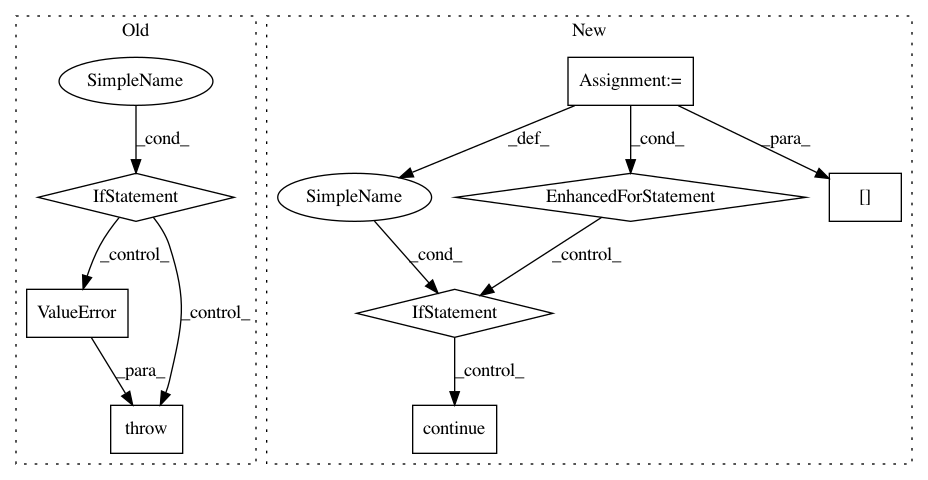

dc357b0e9d2bc40633f738997e8b7d17221c28fd,pyannote/audio/util.py,,from_numpy,#Any#Any#Any#,115
Before Change
`to_numpy`
if np.any(np.abs(y) > 1):
msg = "`y` must be a binary array (i.e. full of zeros and ones)."
raise ValueError(msg)
if isinstance(window, SlidingWindowFeature):
window = window.sliding_window
N, K = y.shape
After Change
K = np.max(y)
y_ = np.zeros((N, K), dtype=np.int8)
for t, k in enumerate(y):
if k == 0:
continue
y_[t, k - 1] = 1
y = y_
N, K = y.shape
In pattern: SUPERPATTERN
Frequency: 3
Non-data size: 8
Instances
Project Name: pyannote/pyannote-audio
Commit Name: dc357b0e9d2bc40633f738997e8b7d17221c28fd
Time: 2018-06-29
Author: bredin@limsi.fr
File Name: pyannote/audio/util.py
Class Name:
Method Name: from_numpy
Project Name: apache/incubator-mxnet
Commit Name: d5fdcbf3bae3ea85cb89394147db4b1da0105fb4
Time: 2020-08-07
Author: linhaibin.eric@gmail.com
File Name: python/mxnet/gluon/trainer.py
Class Name: Trainer
Method Name: __init__
Project Name: Scitator/catalyst
Commit Name: 1a73a1367fedfa8368b6c42103e60e1b370bc14a
Time: 2019-04-19
Author: scitator@gmail.com
File Name: catalyst/contrib/criterion/focal_loss.py
Class Name: FocalLoss
Method Name: forward